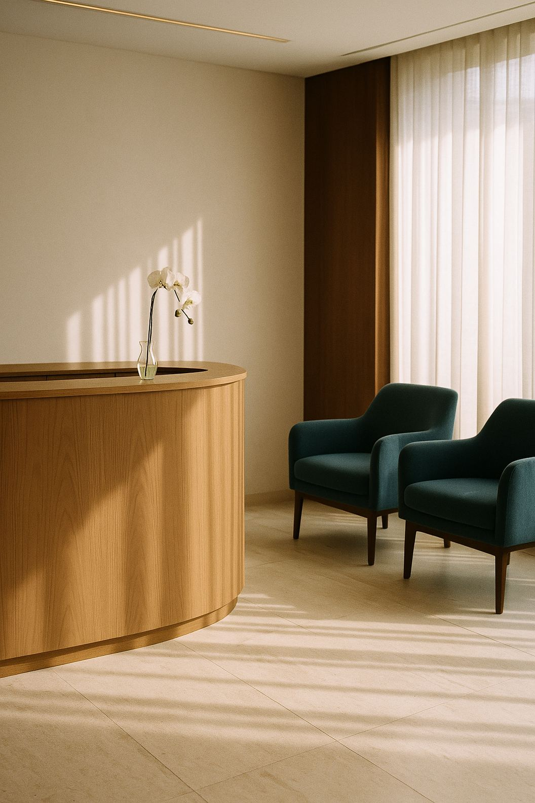
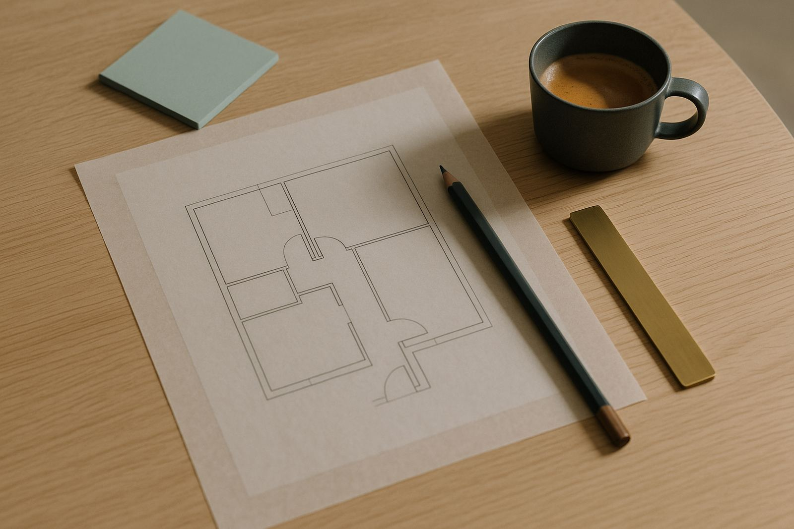
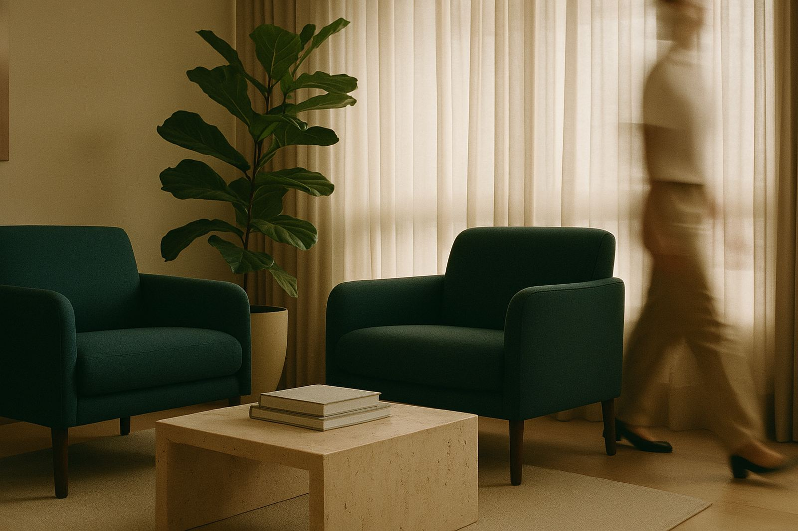
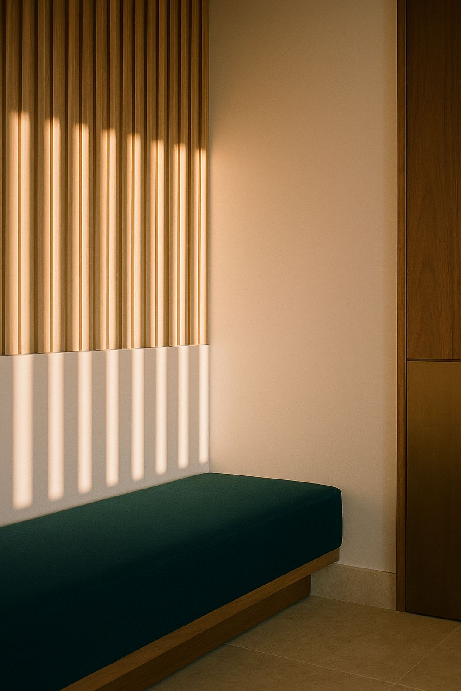

O médico cuidado paciente.A NexVita cuidada clínica.
Gestão executiva e operação para clínicas médicas particulares. Assumimos equipe, atendimento, processos e finanças, sem tirar do médico a liderança da clínica.

Fica com o médico
Hoje, quase tudo isto passa pelas suas mãos.
- O diagnóstico e a conduta
- A relação com o paciente
- Responder o WhatsApp e encaixar a agenda
- Contratar e treinar a equipe
- Pagamentos, notas e fluxo de caixa
- Processos e indicadores
- O pós-consulta e o retorno
Fica com a NexVita
Uma a uma, as frentes de empresa mudam de mãos.
- Atendimento humanizado e agenda
- Recrutamento e rotina da equipe
- Financeiro e BPO
- Processos e indicadores de gestão
- Jornada do paciente e reativação
A jornada do paciente, cuidada de ponta a ponta.
Atendimento humano na linha de frente e tecnologia nos bastidores, em cada etapa em que um paciente costuma se perder.
Primeiro contato
Resposta rápida e humana no WhatsApp, no tom da clínica.
Agendamento
Encaixes, lista de espera e agenda organizada sem retrabalho.
Confirmação
Lembretes e confirmação ativa para reduzir faltas.
Consulta
Recepção preparada, com documentos e pagamento resolvidos antes.
Pós-consulta
Acompanhamento, pesquisa de satisfação e dúvidas respondidas.
Retorno
Retornos lembrados e pacientes antigos reativados no tempo certo.
Três formas de trabalhar com a NexVita.
O escopo se ajusta ao que a clínica já tem. Muitas começam pelo diagnóstico e seguem para a gestão ou a operação.
Diagnóstico operacional
Para clínicas que querem saber por onde começar.
Uma leitura completa da operação, feita dentro da clínica. Você recebe o mapa dos gargalos e um plano priorizado do que mudar, com responsáveis e prazos.

- Agenda, encaixes e faltas
- Atendimento e WhatsApp
- Equipe, funções e rotinas
- Financeiro e margens
- Jornada do paciente
- Presença digital e captação
Gestão executiva complementar
Para clínicas que cresceram sem estrutura de gestão.
Um time executivo ao lado do médico fundador. Conduzimos a empresa enquanto ele conduz a medicina, com reuniões de gestão e indicadores acompanhados todo mês.
- Processos e indicadores
- Contratação e desenvolvimento da equipe
- Organização financeira e BPO
- Reuniões de gestão periódicas
- Ferramentas e automações
- Melhoria contínua
Operação recorrente
Para quem precisa de mãos na operação.
Nossa equipe executa a rotina administrativa da clínica todo mês, com atendimento humanizado e padrão de qualidade acompanhado de perto.
- Atendimento de pacientes no WhatsApp
- Agenda, confirmações e encaixes
- Pagamentos e notas
- Pós-consulta e pesquisa de satisfação
- Lista de espera e reativação
- Filtro de e-mail e contatos comerciais

Sócios dentro da operação.
Gestão vinda do mercado financeiro e operação vinda do atendimento ao cliente, aplicadas à rotina de clínicas particulares.


Tecnologia nos bastidores. Pessoas na linha de frente.
A NexVita AI, nossa unidade de inteligência artificial aplicada, automatiza o que é repetitivo na clínica para que a equipe tenha mais tempo para o paciente. O vínculo com o paciente continua humano.
Conhecer a NexVita AIComece por uma conversa sobre a sua clínica.
